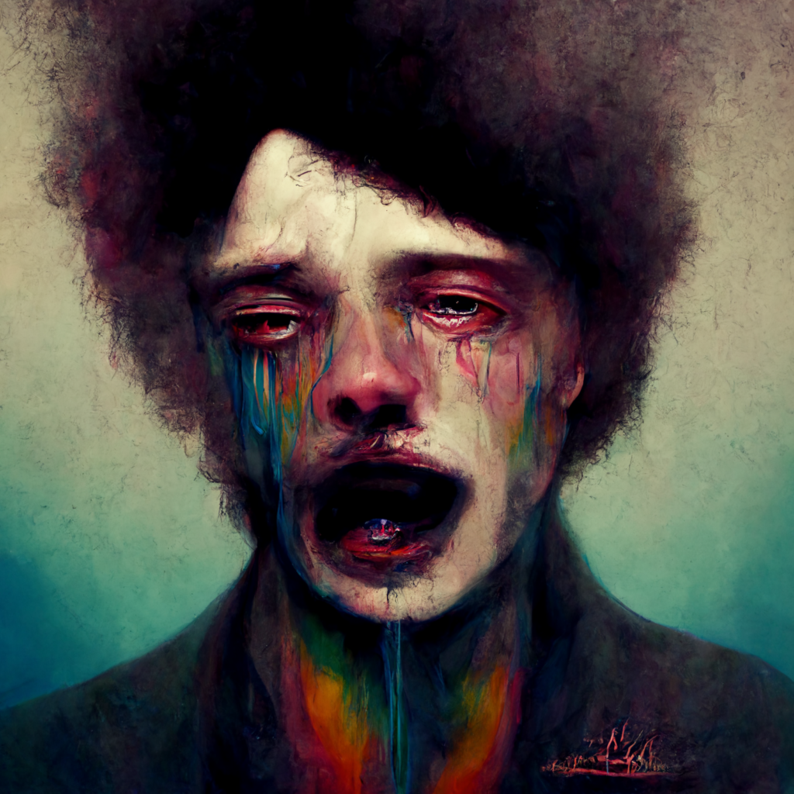
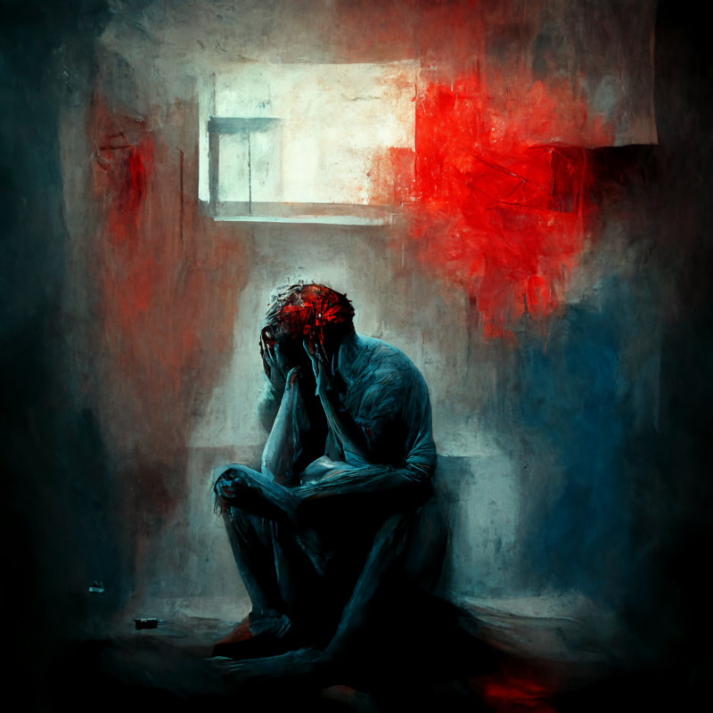
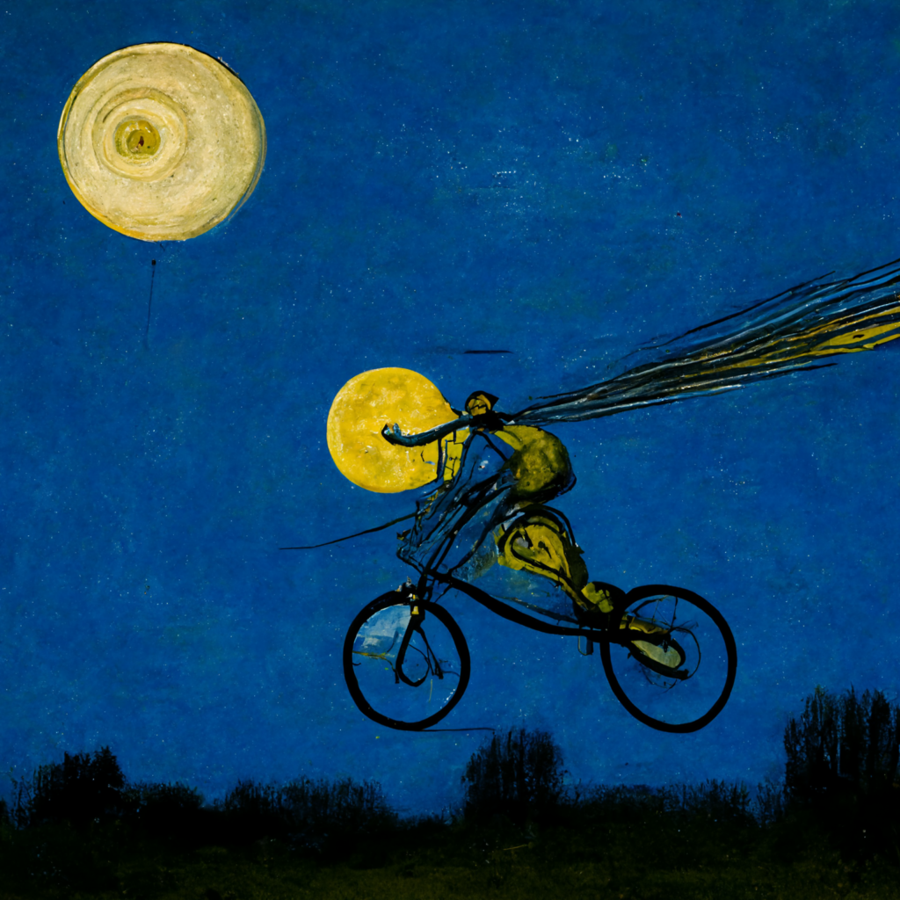
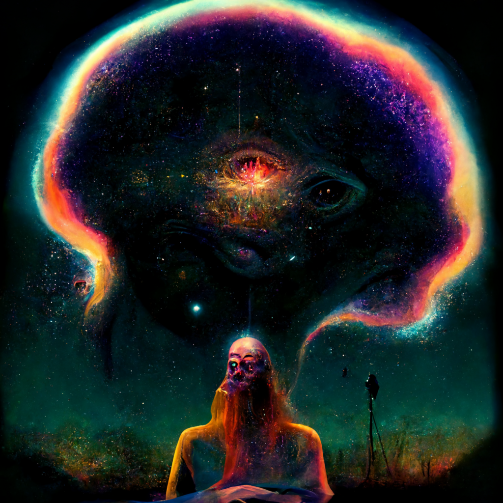

This post contains references to suicidal thoughts. People are always available to listen by text or phone at 988, or at the 988 Lifeline Chat.
Almost a year ago, in early January 2022, I checked myself into the hospital down the street from my house because I wanted to kill myself.
This wasn’t something new for me — I’ve been in the hospital before for the same reason. And this time wasn’t particularly surprising, either — for months, I had been struggling to keep my head above water. Every few days, triggered by perceived social disappointments or personal failures, I would be sent into an inescapable downward spiral, marching from relentless negative self-talk, to derealization and depersonalization, to repetitive calls for help to friends on every messaging platform available, to thoughts of suicide. I had the National Suicide Prevention Lifeline on speed-dial. I had come within an inch of going to the hospital less than a month before.
My friends knew there was something wrong with me, but it seemed there was nothing they could do. This was the manifestation of a pattern that had waxed and waned for more than a decade. But this time, the stress of what should have been a wonderful thing — the world reopening from the pandemic — was more than I could handle. Being thrust once again into the social world meant triggers lay around every corner, and as a result, my life had become inescapable suffering.
In mid-April, about three months after that hospitalization, I started treatment with a new medicine, esketamine (under the brand name Spravato), which I have been taking now for about nine months. I spent more than a decade in my mental health journey being disappointed by medication after medication, facing horrible side effects with barely any relief. Starting 30 minutes after taking a single dose, esketamine eliminated my symptoms of anxiety and depression, something I had never dreamed possible with the dozens of other medicines I had tried. I went from severely depressed to depression-free in barely the time it takes to drink a cup of coffee. And that alone would have been a miracle for me.
But my treatment sessions were far more powerful than that. Esketamine opened up entirely new vistas of mental and spiritual growth. It allowed me to see—to know—who I am as a person, to feel my purpose, to love myself unconditionally. Esketamine broke the shackles that bound me for the entirety of my conscious memory, and allowed me for the first time to live freely and unapologetically as my true self.
I kept a journal during the first months of my treatment, documenting how I felt before and during each medication session. In this series of posts, I want to explore my experience with this remarkable medicine, and to add my narrative to the dialogue about esketamine and other treatments that alter consciousness. I have found this journey fascinating and humbling—as a patient who has experienced psychic suffering for the better part of my life, as a graduate student studying the mechanisms of brain function, and as a physician-in-training searching for tools to ease the burden of millions of people who have suffered like I have.
My psychiatric history began before age 12, and over those years I have worn many diagnostic hats. Last January, I wore two specific labels: bipolar disorder and complex post-traumatic stress disorder.

For as long as I can remember, I have experienced long bouts of depressed mood, lasting from weeks to months. Starting in 2015, I also experienced a couple weeklong bursts of the opposite extreme — incredible euphoria, days without sleep, a feeling that everything was racing and the world was speeding past. The overwhelming default mood, though, was depression: I spent about 8 of the last 10 years depressed, compared with only a couple weeks total in hypomania, the elevated mood state that typifies my kind of bipolar disorder.
“Depression” is a broad label hiding a multitude of experiences. Sometimes there were years, like my first year of medical school, where I could barely motivate myself to eat because I felt like I didn’t deserve food. Yet I would still somehow manage to put on a smile for friends, show up to class, and accomplish an incredible amount — so much that the vast majority of people around me didn’t know the pain that defined my life as I lived it. In other periods, the sadness became so overwhelming that I lost all ability to cope: feeling as though I had lost all agency, I would run to the bathroom, lock the door, and cry on the floor in the fetal position for hours. My cognition would abandon me, I would feel the ground disappear out from underneath me, and I would be left in an unending fall, an infinite vortex of pain — a knife twisting in my chest that nothing could soothe, that seemed as if it would kill me. I lived out vast swaths of my life—all of high school, most of college, most of medical and graduate school—in states like these.
The sadness hurt, but it was not the only component of my mental suffering. My mind had formed in the shadow of years of inescapable trauma, from when I was in kindergarten up through when I was about 15. This was what might be described as “little-t trauma”: not the life-threatening, discrete events that define PTSD, but instead long periods of ongoing pain that created a pervasive sense of being unsafe. My internal model for how the world works —for how interactions with other humans work, for how people view me, for who I am — was created during a time when I was continually hurt by people around me. I hated myself: when mental health providers would ask me my own opinion of myself, I would respond that every other person ever born was truly a human being, but I was not — I was subhuman, not deserving of the same love or happiness as everyone else. I used a medicalized view of my own mental health—of my “illness”—in order to further ingrain this idea:
“Look at these diseases I have that can’t be cured. I am fundamentally broken.”
I would be triggered by stimuli in the environment constantly: it was as if I had no emotional skin, and my raw nerve endings were coming into unprotected contact with the world everywhere I went. Half a second of accidental eye contact with someone on the light rail, the particular way a colleague responded to a greeting, the wrong thing I said to the cashier at the Subway that I knew would make them hate me forever—anything could send me into a spiral, caught in the pain of invasive memories of feelings, people, places from my childhood.

Those ever-present moments of being thrust back into my past hurt me, and that constant suffering defined my life. I was so afraid of encountering triggers that I disassembled my notion of self, destroying any hold I had on my personal identity. At every moment, I was whoever I needed to be to avoid the suffering that would come from being triggered. Eventually, I learned to cope as many people who have experienced this kind of trauma do: I learned to retreat from the world. I turned my view of myself as a non-person into my lived reality. When the triggers came, everything around me faded away, until it no longer felt as if what I was experiencing was real. I receded into my own pocket universe, where I didn’t even know that I was the one in the body sitting there, motionless.
These automatic strategies—of derealization and depersonalization—did not work in the long run: those initial feelings, almost invariably brought on by something innocuous or even subliminal, would build and build, compounding the suffering until it reached a point where no mechanism at my disposal could contain it. I would send dozens of text messages to my close friends, yelling in agony at them through my phone keyboard. “A pervasive pattern of instability of interpersonal relationships, self-image and affects,” this might be called in the diagnostic manual—especially from the lens of borderline personality disorder, a label given to many people with a history of complex trauma like mine.
To me, I was in excruciating pain—pain that I could not bear any more. As I described it to friends many times while I was in these depths, I felt as though I was screaming to everyone that my arm had just been cut off. The responses I got from the people I was closest to — usually silence, sometimes explicit frustration —were completely understandable; but, given that degree of subjective pain, these reactions only served to reinforce my belief of myself as being subhuman and unworthy of help. This response from my close friends would often hurt far more than the pain I was experiencing from the original trigger itself, reflecting the deep ways in which mental life is affected by the social world that surrounds us.
Eventually, the pain would get so bad that I thought it was going to kill me. These were my darkest lows. When these spirals first happened, I would go on to websites like 7 Cups that let you chat with random strangers, to see if I could find anyone to listen. It never helped: invariably, the person on the other end would get frustrated talking to someone with such immovable beliefs, and they would leave. Each time they left felt like a dagger. After a dozen or so disappointments, I moved on to using the National Suicide Prevention Lifeline’s online chat or the 988 text line to have someone to talk to. This worked much better than chat sites, but the time limits on each session meant that I couldn’t talk with people—especially not the same person—for as long as I needed to get through the crisis.
These spirals have waxed and waned through the years, but over the course of 2021, they escalated to the worst point in my recollection. While the lockdown and the heavily distanced period that followed it had been fairly healthy and productive for me—I was lucky to live with close friends and have very engaging work to fill my days—as the world reopened, I was not prepared for the tidal wave of triggers waiting for me outside the little boxes on Zoom. At first, I would crash every few weeks, triggered by interactions in social get-togethers. Then, I started to have crises every week or so coming from smaller interactions in my day-to-day life. By December, I was having episodes every other day or so, and I stopped being able to even identify what caused them. Each spiral would end with me in bed talking with 988.
I was desperate and scared. I couldn’t go on living my life the way I was. I knew it. I repeated it out loud: “I can’t go on living like this.” And finally, when my suffering pushed beyond what I knew was the last threshold—when I saw exactly in my mind how I would kill myself—I walked over to the emergency room.
I was referred to esketamine treatment after it was recommended to me by two doctors: my primary outpatient psychiatrist, who I had been seeing for more than three years, and the psychiatrist who worked with me during my rehabilitation after my hospital stay. Right after discharge, I went to an all-day partial hospitalization program, which focused on building skills from the dialectical behavioral therapy (DBT) toolkit. The program helped me to build techniques for working with my own mind, and to develop insight for understanding myself. These skills would prove essential for my future work with esketamine. After a few weeks of partial hospitalization, I was referred to a Zoom-based outpatient group therapy program. I didn’t stay there long, though: it was so hard to feel like I was building deepening human connections when I was spending so much time — half a day three days a week — glued to a screen.
By this point, a few months had passed since my hospitalization; and, by the time that insurance approvals and scheduling could go through for esketamine treatment, there would be another month delay before I could get into the clinic for my first session. In those weeks—after I left the Zoom group, but before I started esketamine treatment—my mental health took a paradoxical turn: I felt better. Part of it was the change of scenery—after all, my life had revolved around intensive psychiatric care for months, and leaving the group meant I could get back to in person work full-time. Part of it was the real benefit of the DBT skills I had learned, which helped give me the ability to slow down and observe the automatic processes in my mind—although intervening was still hard.
Altogether, I felt OK, especially relative to my baseline prior to the hospitalization. It wasn’t perfect: I still was haunted by the feeling that everyone around me hated me; I still had nights in bed with the Lifeline Chat on my phone, thinking of suicide. But that little dose of positivity, like the therapy skills I had learned, would be crucial for my future esketamine treatment: I went into my first treatment session with a mindset associating the experience with a positive potential for change.
Session 1
I had no idea what to expect. And, to a degree, I didn’t want to have expectations. All that I had been told about the experience from the esketamine clinic itself was that my appointment would run from 10am to 12:30pm, that I probably wouldn’t want to do any work during the treatment, that I shouldn’t use any alcohol or cannabis during the first few weeks of treatment induction—and, that I should set an intention for my session. My outpatient psychiatrist—who had not delivered esketamine to their own patients—told me to expect that I might feel a little “dissociated”. I couldn’t stop myself from briefly perusing the scientific literature; but, as it seemed that a major goal in ketamine research is to develop a similar compound that acts as an antidepressant but is not otherwise psychoactive, the sense I got was that esketamine for depression might be similar to other antidepressants—just one that, as a controlled substance, has to be delivered under the supervision of a medical provider.
But on the off chance that there might be something more to the esketamine experience, I wanted to be prepared. My guiding principle was simple: set and setting, the psychedelic Newton’s law. Setting—the positivity and comfort of the physical and social environment in which the drug session takes place—I figured the clinic would have covered. My focus was on the other half: my mindset, the expectations, thoughts, and feelings that I brought with me, which could profoundly shape the course of my drug experience. I made it my goal to keep my mind focused on the positivity I had been feeling toward this session, right up to the moment I took the medicine.
I hopped on the light rail train headed downtown about an hour before my appointment — too much time, of course, but I was anxious about being late. On the train ride, I focused myself on picking music that would keep me in a positive place—music that had no negative memories or sadness associated with it. This was quite a task: auditory-tactile synesthesia makes music a powerful force in my life, and since I listen to songs one at a time until I can’t stand them, my “Liked Songs” playlist viscerally evokes the emotional story of my life. But with focused attention I was able to keep the positive vibes flowing. The anthem for my esketamine journeys became the “Flying Theme” from E.T.—a song that not only captured the energy I wanted for my session, but was also new to me, free from the constraints of memory.
I hopped on the light rail train headed downtown about an hour before my appointment — too much time, of course, but I was anxious about being late. On the train ride, I focused myself on picking music that would keep me in a positive place—music that had no negative memories or sadness associated with it. This was quite a task: auditory-tactile synesthesia makes music a powerful force in my life, and since I listen to songs one at a time until I can’t stand them, my “Liked Songs” playlist viscerally evokes the emotional story of my life. But with focused attention I was able to keep the positive vibes flowing. The anthem for my esketamine journeys became the “Flying Theme” from E.T.—a song that not only captured the energy I wanted for my session, but was also new to me, free from the constraints of memory.

As the train passed stop after stop, filling with more and more people, my brain worked overtime to keep me focused on holding onto the positivity of what I was about to experience. I brushed away intrusive worries; I swept aside momentary queries of what thoughts lay behind other passengers’ gazes. I used every tool at my disposal—including the skills I had learned after my hospitalization—to keep my mind focused on my intention for treatment. I wasn’t scared or overwhelmed, though. I was focused. This mental effort was work toward my well-being. At this point, after so many years of failures or meager successes in my treatment path, I knew that I wanted to change. I felt, more than anything, willingness and openness toward this new step in my journey — factors which would prove to be the key to my experience.
I climbed the steps of the train station. As I emerged, I was struck by how wrong the weather was for such a hopeful moment in my life: overcast, with immense, ominous clouds rolling by. I laughed a little at this incongruity, and yelled at the clouds in my mind:
This was the time I needed a sign the most! What are you trying to tell me?
I got to the clinic well before my treatment time. The folks at the front desk took my temperature as a Covid precaution, and I sat down at a counter to journal. Bits and pieces of my treatment intention had been floating around in my mind in the previous hours and days, but it was here — in a stream of consciousness just a few minutes before my session — where my compass truly crystallized on paper:
As I put the last period on the last sentence, I was called to go one floor down to the portion of the clinic devoted to esketamine treatment.
The room was divided into two sections. In the innermost sanctum was a soundproofed office for the induction phase, with a comfy reclining chair for the patient and a small desk for the practitioner. Surrounding this office were six individual “pods”, separated by thick curtains, for patients to relax in after the medicine had started to take effect; each had its own recliner, some plants and art, soft lighting, a bowl of candy, a can of ginger ale, and an expandable barf bag (as nausea can be a side effect of the medication for some people, though I never experienced this reaction).
I selected my pod — the biggest one, closest to the front of the room — and sat down in quiet anticipation. A technician took my blood pressure and led me into the inner office, where I was met by my doctor. In that surreal fashion of post-pandemic life, I had never met my doctor in person before this moment. I felt, however, an overwhelming sense of safety: here I was, in this little comfortable nest, with a team there to help guide me through what I was about to experience. My doctor and I talked about how I felt in that moment and my intention for treatment. In a pattern I would repeat in future sessions, in the minutes leading up to when I administered the esketamine, I repeated my intention multiple times, keeping it at the forefront of my mind. Even when the doctor steered the conversation in other directions, I drove it back, holding onto the thought for as long as I could.
The doctor showed me an empty demo unit of the esketamine spray, so that I could get used to what it was like to hold it and press down the plunger. They had me blow my nose, so none of the medicine would be lost on the way in. When I was ready, they unboxed my medicine and handed me one spray. I noticed the excitement in my heart: this was the point of no return. I put the spray in my right nostril and plugged my left. I started to sniff in, then pushed the plunger, taking the medicine in strongly and deeply. Again in the left side.
The first thing I noticed was the foul, metallic taste in the back of my throat. This, I had been warned, was a common experience with the esketamine — so common, in fact, that it had motivated the candy bowls placed in every pod in the office. I immediately availed myself of a red Jolly Rancher. My doctor and I continued to talk for the next five minutes or so, and I noticed myself becoming much looser and livelier in my speech. My perception was completely intact; yet, somehow, it felt as though words came out of my mouth so easily. I worked hard to keep my intention at the forefront of my thinking and talking, but as the minutes passed, I began to ease into allowing my mind to go in the direction it seemed that it wanted to go. My thoughts controlled my experience; and yet, my thoughts were controlled by my experience. These two forces worked in tension. Above all, I felt completely open—completely willing to have whatever experience I was shown.
After about five minutes, the doctor handed me the second spray. I had a little more difficulty this time around, but I was able to administer the medicine once again — right nostril, then left. My vision started to change, subtly — the patterns in the carpet, those little bright spots on a field of dark, started to look like fractals, repeating themselves in a surreal way. I didn’t feel like I was able to say any more words to the doctor, so they advised me to put on my headphones and turn on the playlist we had chosen together in preparation for the session—a set of ambient music curated for ketamine-assisted psychotherapy.
I turned on the music and closed my eyes.

Within seconds, the visions came: shapes flowing through my eyesight in shades of cyan and magenta. At first the shapes seemed far away and abstract, as if viewed through a CRT television; but as time passed, the images became more and more clear. I saw whole worlds—whole planets—pass by me. I began to lose touch with my legs, then my arms; I no longer recognized that they were part of my body. Though I never completely lost touch with my existence inside of the clinic room, that idea began to take on a more and more surreal flavor, as I began to be absorbed into these new worlds I was watching in my mind’s eye. I started to get a little scared: I’m having a full-on psychedelic trip, I realized.
But I took control over where my thoughts were going, putting my DBT skills into practice. I remembered what I had thought before, sitting in the office with the doctor: I am safe. There are people here who care about me. I was overcome with the feeling that it was ok to experience whatever I was going through right now, in this place. It was ok to be open and receptive to it, to let myself be free. It even started to seem a little entertaining: It must be 2022. My insurance is paying a doctor to watch me trip.
As I let go of my resistance, I saw myself moving further and further out: now there were entire solar systems, and then galaxies — a whole universe laid itself out before me. Hours seemed to pass. I felt as though I was one with everything in the entire cosmos — and at the same time, I felt like I was able to look onto the whole universe from outside of it. I felt comfortable in this tension, between connectedness and observation. It was a profound and ineffable experience.

I opened my eyes. I noticed my mind become reintegrated with my surroundings, noticed my arms and legs become reattached to my body. I noticed the hard candy still in my mouth, almost unchanged. I asked the doctor how much time had passed.
“About ten minutes,” they responded.
Ten minutes. To me it had been at least six hours. But it was true: I looked down at Spotify on my phone, and only two songs had passed. The doctor asked me how I felt.
“I have no words,” I answered. I put the headphones back on and closed my eyes again.
Almost immediately, the visions returned, though this time their contents didn’t leave an imprint on my memory. After another ten minutes or so, I came out of my trance and returned to the room again. This time, I was ready to talk to the doctor.
I felt, for the first time in my memory, that I had a sense of my identity, of who I truly was. It didn’t feel as if this identity had been made in the session from whole cloth; rather, it felt that the esketamine had allowed me to find this person, this me, from deep within myself. This new identity was the “childlike” me — the me that was always curious, in wonder, in awe at everything I saw. As I floated through planets and solar systems and galaxies, I felt myself profoundly moved by the depth of the experience, by the immensity of what lay inside my mind. But it was this joyous self that was the real discovery. I felt exuberant, ecstatic, amazed to be flying through this unknown cosmos, discovering. It was fun!
For the first time in my recollection I was anchored. Stable. Secure. This was who I was, and who I wanted to be.
My doctor was clearly excited to see and hear these results, and they invited me to get up from the chair and dance around a bit in the office. I felt as if I had been bound by ropes and chains and leg irons for so many years — and now, at long last, all of those bindings had been broken, and I was free to be me.
As I sat back down again, I realized that my physical symptoms of anxiety—the tightness throughout my body, the sense of my own heart beating, the intense vigilance toward every detail of my surroundings—had disappeared. I was anxiety-free. “I felt complete peace doing nothing for the first time,” I would write in my journal an hour later. I was, without reservation, entirely content to just be in the moment. It felt as though part of my body had been stuck in the past, reliving my traumas over and over again without the involvement of my mind, and now, for the first time, my body had been reunited with my mind living in this present moment, where the danger was gone, and it was ok to exist as myself.
I leaned back in the chair. In my content and wonder-filled state, I watched as the light from the ominous clouds that passed by outside the office window danced on the ceiling and walls. The beauty and power of it moved me. I thought about how I had decided to close my eyes during the peak, rather than use the eye mask I had been given when I walked in, so just a little bit of light from the outside world could fall on my retinas. I wondered how much of my experience had been caused by those ominous clouds I had jokingly yelled at before. I wondered if I would have had the same visions—the same incredible transformation—if the clouds hadn’t been the exact way they were the moment I had my session. Everything, it seemed, had happened in just the way it had to in order for me to have the experience I was having.
At this point, about an hour had passed since I first entered the office with my doctor. I felt that my mental state was still somewhat altered, and my extremities still felt a little like Jell-O, but my visual and auditory perception had returned to normal. The doctor walked me back to my pod, and I spent the remaining hour and a half journaling and listening to another playlist of music I had curated before the session.
This post-peak period, I came to realize in future sessions, was just as important to my healing as the journey at the peak itself. In this altered state, I had time and space to process what had just been shown to me, to integrate it with my intention for treatment, and to document my experiences so they wouldn’t be lost to memory. This first day, I jotted a quick entry and relaxed to some chamber jazz; but as I looked to the sessions ahead of me, I knew that this was a time that held immense therapeutic potential.
An hour and a half, two blood pressure checks, and a small mountain of red and pink Starburst candies later, I had no more lingering effects on my perception, thinking, or movement. I filled out a survey on how dissociated I had felt during the session—“Moderate”, according to the definitions—and walked downstairs to call an Uber. I had to be at work in half an hour for lab meeting. \(\,\blacksquare\)
Since this first experience, I have had over twenty more sessions with esketamine. Some were amusing getaways. Others were profound spiritual journeys.
In this series, I will go through my journal to synthesize what I experienced and learned over the course of this life-changing treatment.
I’ll explore the neurobiology of esketamine in the treatment of depression; the movement to change our understanding of what mental “illness” is and how it comes about; the vast history and base of knowledge in the phenomenology of psychedelic agents; the forgotten psychology of the unconscious mind; the new frontiers of understanding how psychedelics enable mental change; and, how all of this points toward a revolutionary new approach to mental healing—and to fortifying our resilience to prevent suffering from arising in the first place. \(\,\triangleright\)